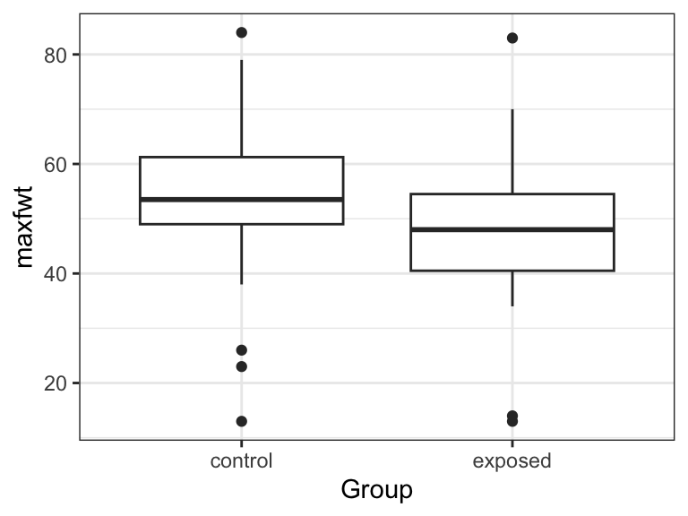

library(tidyverse)
library(broom)Two-sample t-Methods
Paired \(t\)-tests
Data from 10 women contain the systolic blood pressure (SBP) (in mm Hg) before and while using an oral contraceptive.
oc_df <- data.frame( pre_sbp = c(115, 112, 107, 119, 115, 138, 126, 105, 104, 115), post_sbp = c(128, 115, 106, 128, 122, 145, 132, 109, 102, 117) )We use
t.test()to run a paired \(t\)-test.x: The first column.y: The second column.paired: set toTRUEto make it a paired \(t\)-test.
t.test(x = oc_df$post_sbp, y = oc_df$pre_sbp, paired = TRUE) |> tidy()# A tibble: 1 × 8 estimate statistic p.value parameter conf.low conf.high method alternative <dbl> <dbl> <dbl> <dbl> <dbl> <dbl> <chr> <chr> 1 4.8 3.32 0.00887 9 1.53 8.07 Paired t-… two.sidedThis is the exact same as just first calculating the differences then running a one-sample \(t\)-test.
oc_df <- mutate(oc_df, diff = post_sbp - pre_sbp) t.test(diff ~ 1, data = oc_df) |> tidy()# A tibble: 1 × 8 estimate statistic p.value parameter conf.low conf.high method alternative <dbl> <dbl> <dbl> <dbl> <dbl> <dbl> <chr> <chr> 1 4.8 3.32 0.00887 9 1.53 8.07 One Sampl… two.sidedNotice that the paired \(t\)-test uses
x - y, noty - x, as the vector of differences.Our conclusion might read like this:
We have strong evidence that women who use an oral contraceptive (OC) have a different mean systolic blood pressure (SBP) than women who do not use an OC (\(p\) = 0.008874, \(n\) = 10). We estimate that women who use an OC have on average an SBP 4.8 mm Hg higher than women who do not use an OC (95% CI 1.534 mm Hg to 8.066 mm Hg higher).
A study included 15 twins where one has schizophrenia and the other does not. These data contain the volume (in cm\(^3\)) of the left hippocampus of each twin. These data are from The Statistical Sleuth, which in turn obtained the data from doi:10.1056/NEJM199003223221201. Evaluate if there are any physical differences between the twins. Also, provide an interval estimate on the mean difference in volume between twin-types. Do this in two ways (i) by using t.test() and (ii) “by hand” after calculating the appropriate summary statistics.
sc_df <- data.frame(
Unaffected = c(1.94, 1.44, 1.56, 1.58, 2.06, 1.66, 1.75, 1.77,
1.78, 1.92, 1.25, 1.93, 2.04, 1.62, 2.08),
Affected = c(1.27, 1.63, 1.47, 1.39, 1.93, 1.26, 1.71, 1.67,
1.28, 1.85, 1.02, 1.34, 2.02, 1.59, 1.97)
)Let \(X_i\) be the difference in volume in the \(i\)th twin. Then we assume \(X_i \sim N(\mu, \sigma^2)\). We are testing \(H_0: \mu = 0\) versus \(H_1: \mu \neq 0\). In R, we run this test using:
t.test(x = sc_df$Affected, y = sc_df$Unaffected, paired = TRUE) |>
tidy()# A tibble: 1 × 8
estimate statistic p.value parameter conf.low conf.high method alternative
<dbl> <dbl> <dbl> <dbl> <dbl> <dbl> <chr> <chr>
1 -0.199 -3.23 0.00606 14 -0.331 -0.0667 Paired t-… two.sided We have strong evidence of a difference in mean volume between the twin types (\(p\) = 0.00602, n = 15). We estimate that the unaffected twin has on average 0.2 cm\(^3\) larger hippocampus than the affected twin (95% CI 0.0667 cm\(^3\) to 0.3306 cm\(^3\) larger).
By hand,w e first calculate the difference between the two twins:
sc_df <- mutate(sc_df, diff = Affected - Unaffected)We now need the summary statistics
xbar <- mean(sc_df$diff)
s <- sd(sc_df$diff)
n <- nrow(sc_df)The \(t\)-statistic is \(\frac{\bar{x}}{s/\sqrt{n}}\)
t <- xbar / (s / sqrt(n))
t[1] -3.229We calculate the \(p\)-value by two times the tail area:
p_value <- 2 * pt(-abs(t), df = n - 1)
p_value[1] 0.006062The 95% confidence interval is \(\bar{x} \pm t_{1-\alpha/2,n-1}s/\sqrt{n}\)
lower <- xbar - qt(p = 0.975, df = n - 1) * s / sqrt(n)
upper <- xbar + qt(p = 0.975, df = n - 1) * s / sqrt(n)
c(lower, upper)[1] -0.3306 -0.0667Unpaired (Equal Variance)
Consider the lead data that you can read about here.
lead <- read_csv("https://dcgerard.github.io/stat_320/data/lead.csv") lead <- filter(lead, !is.na(iqf))We are interested in if the exposed and control groups have the same mean full scale IQ. Let’s explore the data
ggplot(lead, aes(x = Group, y = iqf)) + geom_boxplot()Let \(X_i\) be the \(i\)th IQ score in the control group, let \(Y_i\) be the \(i\)th IQ score in the exposed group.
Then we assume that \(X_i \sim \mathrm{N}(\mu_1, \sigma^2)\) and \(Y_i \sim \mathrm{N}(\mu_2, \sigma^2)\), and that all observations are independent.
We use
t.test()to run a two-sample \(t\)-test.- The quantitative variable is to the left of the tilde
~ - The variable encoding the two groups is to the right of the tilde
- If we assume equal variances in each group, we set
var.equal = TRUE
t.test(iqf ~ Group, data = lead, var.equal = TRUE) |> tidy()# A tibble: 1 × 10 estimate estimate1 estimate2 statistic p.value parameter conf.low conf.high <dbl> <dbl> <dbl> <dbl> <dbl> <dbl> <dbl> <dbl> 1 4.53 92.6 88.0 1.67 0.0977 118 -0.845 9.91 # ℹ 2 more variables: method <chr>, alternative <chr>- The quantitative variable is to the left of the tilde
We can verify this result manually (you would never do this in real life, but you might on an exam).
## Get summary statistics of the two groups lead |> group_by(Group) |> summarize(mean = mean(iqf), var = var(iqf), n = n()) -> sumdf xbar <- sumdf$mean[[1]] ybar <- sumdf$mean[[2]] s2x <- sumdf$var[[1]] s2y <- sumdf$var[[2]] n1 <- sumdf$n[[1]] n2 <- sumdf$n[[2]] ## Calculate pooled sample standard deviation s <- sqrt(((n1 - 1) * s2x + (n2 - 1) * s2y) / (n1 + n2 - 2)) ## Calculate t-statistic tstat <- (xbar - ybar) / (s * sqrt(1 / n1 + 1 / n2)) ## compare to t distribution with n1 + n2 - 2 df pval <- 2 * pt(-abs(tstat), df = n1 + n2 - 2) ## Get confidence intervals lower <- (xbar - ybar) - qt(0.975, df = n1 + n2 - 2) * s * sqrt(1 / n1 + 1 / n2) upper <- (xbar - ybar) + qt(0.975, df = n1 + n2 - 2) * s * sqrt(1 / n1 + 1 / n2) c(pval = pval, lower = lower, upper = upper)pval lower upper 0.09772 -0.84454 9.90917
Is there any difference between exposed and control groups when it comes to the finger-wrist tapping test in dominant hand (maxfwt)? Assume equal variances.
We read in the data
lead <- read_csv("https://dcgerard.github.io/stat_320/data/lead.csv")It appears that the exposed group might have a lower mean tapping value than the control group. But it is unclear.
lead |>
filter(!is.na(maxfwt)) |>
ggplot(aes(x = Group, y = maxfwt)) +
geom_boxplot()
We run the test using t.test().
t.test(maxfwt ~ Group, data = lead, var.equal = TRUE) |>
tidy()# A tibble: 1 × 10
estimate estimate1 estimate2 statistic p.value parameter conf.low conf.high
<dbl> <dbl> <dbl> <dbl> <dbl> <dbl> <dbl> <dbl>
1 7.01 54.4 47.4 2.68 0.00872 97 1.81 12.2
# ℹ 2 more variables: method <chr>, alternative <chr>Yes, we have strong evidence of a difference between groups (p = 0.005). We estimate that the control group taps about 7 more times on average (95% CI of 1.8 to 12.2 more times).
A sample of eight 35- to 39-year-old non-pregnant, premenoposaul OC users have a mean systoolic blood pressure (SBP) of 132.82 mm Hg and a sample standard deviation of 15.34 mm Hg. A different sample of 21 non-pregnant, premenopausal, non-OC users have a mean SBP of 127.44 mm Hg and a sample standard deviation of 18.23 mm Hg. What can be said about the underlying mean difference in blood pressure between the two groups? Provide a measure of how sure we are that there is a difference, and provide some interval estimate for this difference. Assume equal variances.
We plug in these summary statistics:
xbar <- 132.82
s2x <- 15.34^2
n1 <- 8
ybar <- 127.44
s2y <- 18.23^2
n2 <- 21Let’s calculate the pooled sample standard deviation \(s_p = \sqrt{\frac{(n_1-1)s_x^2 + (n_2 - 1) s_y^2}{n_1 + n_2 - 2}}\)
s <- sqrt(((n1 - 1) * s2x + (n2 - 1) * s2y) / (n1 + n2 - 2))Now the \(t\)-statistic \(t = \frac{\bar{x} - \bar{y}}{s\sqrt{1/n_1 + 1/n_2}}\)
tstat <- (xbar - ybar) / (s * sqrt(1 / n1 + 1 / n2))The \(p\)-value of the test is area in both tails
pval <- 2 * pt(-abs(tstat), df = n1 + n2 - 2)
pval[1] 0.4664The confidence interval:
lower <- (xbar - ybar) - qt(0.975, df = n1 + n2 - 2) * s * sqrt(1 / n1 + 1 / n2)
upper <- (xbar - ybar) + qt(0.975, df = n1 + n2 - 2) * s * sqrt(1 / n1 + 1 / n2)
c(lower = lower, upper = upper) lower upper
-9.561 20.321 We don’t have evidence that the non-OC and OC using groups differ in mean systolic blood pressure (\(p\)-value = 0.46664). The difference in mean blood pressure between groups is estimated to be 5.38 (95% CI of -9.561 to 20.321).
Test for Equal Variance
Suppose we have \(X_i \sim N(\mu_1, \sigma_1^2)\) and \(Y_i \sim N(\mu_2,\sigma_2^2)\).
It is possible to test \(H_0: \sigma_1 = \sigma_2\) versus \(H_1: \sigma_1 \neq \sigma_2\).
Folks don’t typically do this test because:
- It is very sensitive to the normality assumption. Conversely, the \(t\)-test is not.
- The \(t\)-test with equal variances is relatively robust to violations in the equal variance assumption.
- Folks typically just use the unequal variances \(t\)-test below.
But if your boss asks you run such a test, use
var.test().var.test(iqf ~ Group, data = lead) |> tidy()Multiple parameters; naming those columns num.df and den.df.# A tibble: 1 × 9 estimate num.df den.df statistic p.value conf.low conf.high method alternative <dbl> <int> <int> <dbl> <dbl> <dbl> <dbl> <chr> <chr> 1 1.65 73 45 1.65 0.0719 0.955 2.76 F tes… two.sidedThis test is based on the ratio of the variances \(s_1^2 / s_2^2\). Under the null, this follows a \(F\)-distribution with \(n_1 - 1\) numerator degrees of freedom and \(n_2 - 1\) denominator degrees of freedom.
lead |> filter(!is.na(iqf)) |> group_by(Group) |> summarize(var = var(iqf), n = n()) -> sumdf var1 <- sumdf$var[[1]] var2 <- sumdf$var[[2]] n1 <- sumdf$n[[1]] n2 <- sumdf$n[[2]] ## for fstat > 1 fstat1 <- var1 / var2 2 * pf(q = fstat1, df1 = n1 - 1, df2 = n2 - 1, lower.tail = FALSE)[1] 0.07194## For fstat < 1 fstat2 <- var2 / var1 2 * pf(q = fstat2, df1 = n2 - 1, df2 = n1 - 1, lower.tail = TRUE)[1] 0.07194
Unpaired (Unequal Variance)
When you don’t want to assume equal variances (typically the case), just use the default settings of
t.test()that hasvar.equal = FALSE.lead <- read_csv("https://dcgerard.github.io/stat_320/data/lead.csv") lead <- filter(lead, !is.na(iqf)) t.test(iqf ~ Group, data = lead) |> tidy()# A tibble: 1 × 10 estimate estimate1 estimate2 statistic p.value parameter conf.low conf.high <dbl> <dbl> <dbl> <dbl> <dbl> <dbl> <dbl> <dbl> 1 4.53 92.6 88.0 1.77 0.0797 112. -0.545 9.61 # ℹ 2 more variables: method <chr>, alternative <chr>Don’t bother memorizing Satterthwaite’s approximation for the degrees of freedom. Just do this in the computer.
Is there a difference in finger tapping between groups? Don’t assume equal variances.
lead <- read_csv("https://dcgerard.github.io/stat_320/data/lead.csv")
lead <- filter(lead, !is.na(maxfwt))
t.test(maxfwt ~ Group, data = lead) |>
tidy()# A tibble: 1 × 10
estimate estimate1 estimate2 statistic p.value parameter conf.low conf.high
<dbl> <dbl> <dbl> <dbl> <dbl> <dbl> <dbl> <dbl>
1 7.01 54.4 47.4 2.61 0.0113 65.0 1.64 12.4
# ℹ 2 more variables: method <chr>, alternative <chr>Some evidence of a difference (p = 0.01125). We estimate that the control group has 7 more taps on average (95% CI of 1.6 to 12.3 more taps on average).
Power and Sample Size Calculations in Two-sample \(t\)-tests
Use
power.t.test().In the two-sample case,
nmeans the sample size per group. It assumes the sample sizes are equal, so the total sample size is2 * n.It also assumes the standard deviations are equal, so you need to use a pooled estimate of the standard deviation.
If you need more precise power or sample size calculations, then those exist.
- But I think these calculations are so much guess work that the error of assuming equal sample sizes is less than the error of the wild guesses you are giving it.
E.g., suppose we have the OC user exercise above as a pilot experiment.
xbar <- 132.82 s2x <- 15.34^2 n1 <- 8 ybar <- 127.44 s2y <- 18.23^2 n2 <- 21Let’s calculate a pooled estimate of the variance, and we will assume that is the true variance for the power calculations.
s <- sqrt(((n1 - 1) * s2x + (n2 - 1) * s2y) / (n1 + n2 - 2)) s[1] 17.53Let’s suppose we want a power of 0.8. Then the sample size we would need is 168 per group:
power.t.test( delta = xbar - ybar, sd = s, sig.level = 0.05, power = 0.8, type = "two.sample")Two-sample t test power calculation n = 167.6 delta = 5.38 sd = 17.53 sig.level = 0.05 power = 0.8 alternative = two.sided NOTE: n is number in *each* groupIf a researcher can only afford \(n = 100\) per gropu, then the power calculation would be 0.58:
power.t.test( n = 100, delta = xbar - ybar, sd = s, sig.level = 0.05, type = "two.sample")Two-sample t test power calculation n = 100 delta = 5.38 sd = 17.53 sig.level = 0.05 power = 0.5793 alternative = two.sided NOTE: n is number in *each* group
Suppose a new drug is proposed to lower intraocular pressure (IOP) among people with glaucoma. It is anticipated that mean IOP will drop by 8 mm Hg after 1 month with the new drug. The comparison group will get the standard drug, which is anticipated to have a mean drop in IOP of 5 mm Hg after 1 month. It is expected that the sd of change within each group will be 10 mm Hg. How many subjects need to be enrolled to achieve 90% power if an equal sample size is planned within each group and a two-sided test with \(\alpha\) = 0.05 will be used?
power.t.test(delta = 3, sd = 10, sig.level = 0.05, power = 0.9)
Two-sample t test power calculation
n = 234.5
delta = 3
sd = 10
sig.level = 0.05
power = 0.9
alternative = two.sided
NOTE: n is number in *each* group235 subjects per group